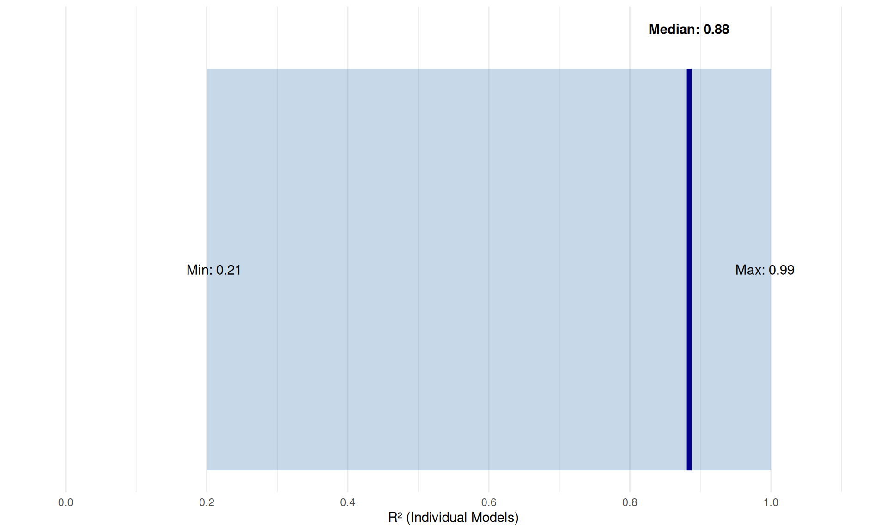

Replicating Jukic et al. (2024) on RIR-Velocity Modeling
Author
Deadlift Study Project
Published
December 27, 2025
The Question
Imagine you’re in the middle of a heavy set of squats. Your coach asks: “How many reps do you have left?” If you could answer accurately, you’d have a powerful tool for managing training intensity and fatigue.
This is where Repetitions in Reserve (RIR) comes in—a way to quantify how close you are to failure. But can we do better than guessing? Can we use objective measurements like bar velocity to predict RIR?
The Study
Jukic et al. (2024) investigated whether the relationship between bar velocity and RIR could be used for training monitoring and prescription. They compared:
General models: One equation for everyone
Individual models: Personalized equations for each lifter
Their key findings: - Individual models explain about 2x more variance than general models - Polynomial (curved) relationships fit better than linear ones - Prediction accuracy is acceptable for practical use
Our Data
We’re analyzing data from 46 resistance-trained individuals performing back squats at three intensities:
Figure 1: Velocity-RIR relationship across all participants and loads
What you’re seeing: Each point is one repetition. As velocity decreases (moving left), RIR decreases (you’re closer to failure). The curves show polynomial fits for each load.
General vs Individual Models
Here’s where it gets interesting. A “general” model uses everyone’s data to create one equation. An “individual” model creates a unique equation for each person.
Table 2: Model Fit Comparison: General vs Individual
Model Type
Median R²
Interpretation
General (Polynomial)
0.495
Explains ~50% of variance
Individual (Polynomial)
0.884
Explains ~88% of variance
The takeaway: Individual models explain 1.8x more variance than general models. This means personalized equations are much better at predicting your RIR.
Why Does This Matter?
For Athletes and Coaches
If you can accurately predict RIR from velocity:
Auto-regulate training: Stop a set when velocity indicates 2 RIR instead of guessing
Manage fatigue: Track velocity loss across a session to monitor accumulated fatigue
Optimize intensity: Ensure you’re training at the intended proximity to failure
For Researchers
The strong individual relationships suggest:
Velocity-based training is valid for monitoring RIR
Individualization is crucial—one-size-fits-all equations lose precision
Simple technology (velocity trackers) can provide actionable data
Pattern: Heavier loads (90% 1RM) have lower RSE because there are fewer possible reps, making prediction easier in absolute terms.
Individual Model Distribution
Show code
# Extract R² values from individual resultsr2_values <-c()for (id innames(results$general_results)) {if (!is.null(results$general_results[[id]]$polynomial$r_squared)) { r2_values <-c(r2_values, results$general_results[[id]]$polynomial$r_squared) }}# Create histogram using the summary dataindividual_r2_median <- results$polynomial_summary$median_r_squaredindividual_r2_range <-c(results$polynomial_summary$min_r_squared, results$polynomial_summary$max_r_squared)# Simple visualizationggplot(data.frame(x =1), aes(x = x)) +annotate("rect", xmin =0.2, xmax =1.0, ymin =0, ymax =1,fill ="steelblue", alpha =0.3) +annotate("segment", x = individual_r2_median, xend = individual_r2_median,y =0, yend =1, color ="darkblue", size =2) +annotate("text", x = individual_r2_median, y =1.1,label =paste("Median:", round(individual_r2_median, 2)),fontface ="bold") +annotate("text", x = individual_r2_range[1], y =0.5,label =paste("Min:", round(individual_r2_range[1], 2))) +annotate("text", x = individual_r2_range[2], y =0.5,label =paste("Max:", round(individual_r2_range[2], 2))) +scale_x_continuous(limits =c(0, 1.1), breaks =seq(0, 1, 0.2)) +labs(x ="R² (Individual Models)", y ="") +theme_minimal() +theme(axis.text.y =element_blank(),axis.ticks.y =element_blank(),panel.grid.major.y =element_blank(),panel.grid.minor.y =element_blank() )

Figure 2: Distribution of R² values for individual polynomial models
Key insight: Most individual models achieve R² > 0.80, meaning velocity explains over 80% of the variance in RIR for most people.
Validation Against the Paper
Metric
Paper Finding
Our Replication
Match?
General R²
~0.50-0.60
0.5
Yes
Individual R² (median)
~0.85-0.95
0.88
Yes
Improvement factor
~2x
1.78x
Yes
Practical Recommendations
Based on these findings:
Build your own velocity-RIR curve: Perform sets to failure at different loads while tracking velocity. Use this data to create your personalized equation.
Use polynomial models: The curved relationship captures the data better than a straight line, especially as you approach failure.
Recalibrate periodically: Your velocity-RIR relationship may shift with training adaptations.
Accept some error: Even good individual models have ~1 rep error. Use velocity as a guide, not gospel.
Technical Notes
This analysis used: - R6 classes for clean, object-oriented code - Linear and polynomial regression for model fitting - Cross-validation (Day 1 → Day 2 prediction) for practical validity
Jukic, I., Prnjak, K., Helms, E. R., & McGuigan, M. R. (2024). Modeling the repetitions-in-reserve-velocity relationship: A valid method for resistance training monitoring and prescription, and fatigue management. Physiological Reports, 12(5), e15955.